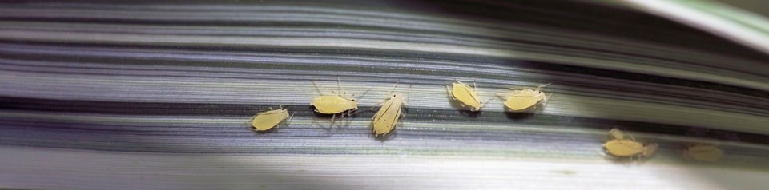

Having plants inside a home goes back to the early Greeks and Romans. They grew plants in pots and sometimes brought them into their homes. You can see them depicted in paintings and sculptures. It became really popular in the 17th century when the author Hugh Platt in his book The Garden of Eden (1652) talked about the idea of cultivating plants indoors. Soon after, greenhouses and conservatories were being built in England to house exotic plants. In the mid 19th century, books were being written on growing plants at home included the use of greenhouses becoming more popularized (Graf, Byrd, Perrot, n.d.). Click here to read more details on the history!
A houseplant is any plant that has been adapted to be grown indoors. There are certain types that are attractive and easy to take care of that have become popular to grow indoors. Some of the most common are exotic plants that can grow inside in colder climates even if they come from warmer areas of the world. Overall, most of them are native from tropical or near tropical areas (Graf, Byrd, Perrot, n.d.). Find out more on what a houseplant can look like in your home here.
Here is a list of some of the most common types of houseplants people like to buy:
Another thing to always keep in mind when owning indoor plants is pests. Certain plants will attract certain pests, but it's always important to keep a constant lookout on youru plants leaves and roots to see if you spot anything. Here's a list of some common pests that can cause trouble: Thrips, aphids, spider mites, mealybugs, and whiteflies to name a few. You can find plenty of different guides online to help identify what kind of pest your plants might have.
